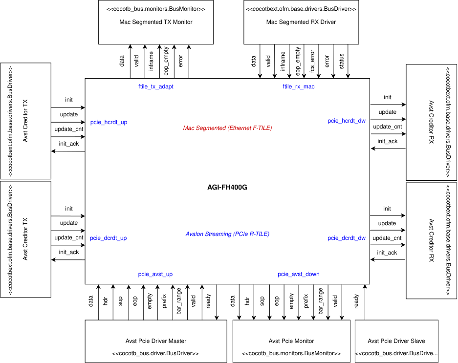
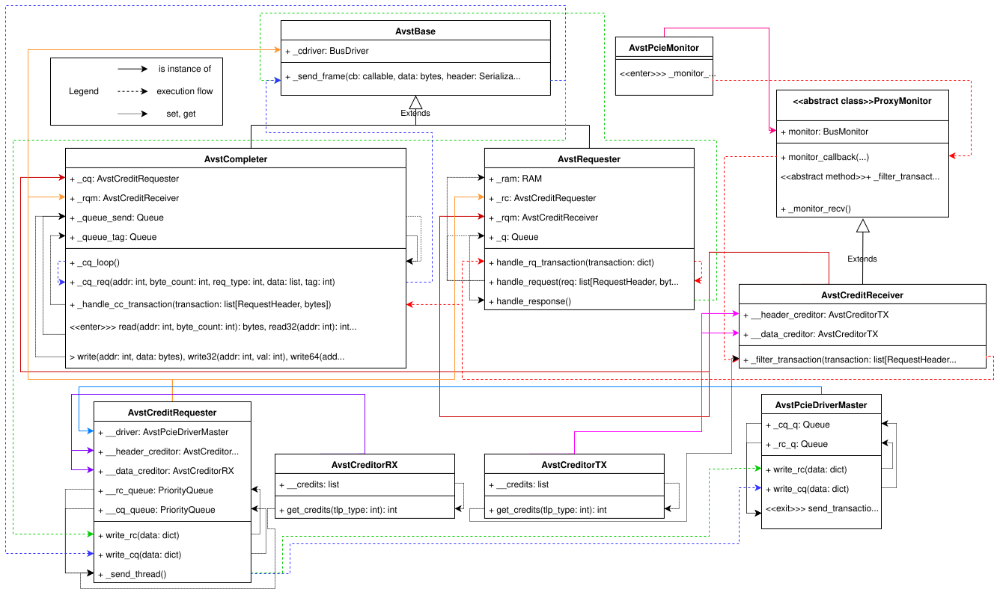

Top-Level Simulation using cocotb/cocotbext-ndk
NDK-FPGA also includes a top-level simulation for running tests on the whole firmware of FPGA cards. It is implemented using
Python and the cocotb framework. Some parts of cocotb were also modified and extended by us to better fit our use cases, creating
the cocotbext-ndk package. If you want to discover more about cocotbext-ndk, refer to its chapter.
Requirements
Python version 3.11 and higher, Intel Quartus Prime Pro or AMD Vivado, and Questa Sim are required.
Cloning ndk-fpga from GitHub with all its dependencies is also required. You can achieve this using the following command:
git clone --recurse-submodules https://github.com/CESNET/ndk-fpga.git
Warning
Some submodules are internal to CESNET and may not be accessible for cloning by unauthorized users.
How to run
Locate the ndk-fpga repository. Then use the following command to change into the simulation’s location:
cd ndk-fpga/apps/minimal/tests/cocotb
Use the prepare.sh script which automatically creates a Python virtual environment with all the dependencies:
./prepare.sh
After the script is finished, enter the newly created virtual environment:
source venv-cocotb/bin/activate
Then run the simulation using the included Makefile. You can also specify the card that shall be simulated. Selection of the simulated card is performed with the environment variable CARD:
make CARD=...
Note
Source files used to run the simulation of all cards can be found in ndk-fpga/apps/minimal/build. To find out which
cards are supported, refer to NFBDevice in ndk-fpga/core/cocotb/ndk_core/nfbdevice.py.
Architecture
Now let’s do a deep dive into what the top-level simulation is used for and how it actually functions.
A top-level simulation is used for a simple software verification of the entire FPGA firmware of network cards. This allows for debugging their functionality before actual deployment. It tests several basic operations on the network card: writing to and reading from the MI interface, activating the RX MAC and checking its status, measuring the frequency of clock signals, and sending and receiving packets through the entire design. It’s designed to be as universal and easily modifiable as possible to support additional network cards.
The specifics of individual network cards are configured using the NFBDevice class (found in ndk-fpga/core/cocotb/ndk_core/nfbdevice.py).
This includes, among other things, starting the necessary clocks and initializing the Ethernet and PCIe interface drivers and monitors.
These are then used by the tests to send input data to and read output data from the network card. Each card has pre-defined frequencies for clock
signals and the simulation selects the appropriate ones according to the simulated CARD. The card’s design conditionally selects drivers and
monitors based on individual signals it contains. These approaches give the NFBDevice module considerable
versatility, reduce redundancy, and allow to easily extend the list of supported cards in the future.
Several PCIe and Ethernet interfaces are supported. For PCIe, both Axi4 Stream and Avalon Streaming for PCI Express can be used. In the case of the Avalon Streaming bus, two variants for two Hard IPs are supported: the older P-Tile and the newer R-Tile (adds a credit interface). In the area of Ethernet interfaces, modules enabling the use of LBus (CMAC hard IP), Avalon Streaming for Ethernet (E-Tile), and MAC Segmented (F-Tile) are implemented. Due to the support for many cards and interfaces, the AGI-FH400G card will be used to describe the top-level simulation.
{kind=link}

AGI-FH400G Card Firmware Simulation Block Diagram.
The block diagram above illustrates the connection of individual drivers and monitors used in the simulation to specific hardware design signals. Drivers typically inherit from the BusDriver class, either from the cocotb_bus package (one of the packages provided by cocotb) or from the identically named class in the cocotbext-ndk package. Monitors inherit from the BusMonitor class from the cocotb_bus package. The diagram illustrates the inheritance hierarchy by displaying each object’s parent class in its respective header. Monitors can only read signal values and report them. Drivers can both read from and write to signals. The interaction method between an object and a specific signal is shown by arrows between them: an arrow from a driver to the card means the signal’s value is modified by the driver and read by the card. Conversely, an arrow from the card to a driver or monitor indicates that the signal is controlled by the card and is read by the connected object.
Typically, PCIe and Ethernet interface signals are set and read during verification. This specific card uses the PCIe R-Tile hard IP with the Avalon Streaming interface and associated credit interface; individual signal groups of this interface are shown in blue. The Ethernet F-Tile hard IP uses the MAC Segmented interface, which is marked in red.
{kind=link}

Class Diagram for Controlling the Simulated R-Tile PCIe Avalon-ST Interface
However, the simulation architecture is usually much more complex than simply setting and reading signals, with many layers between the test and the simulated hardware. A great example, in the case of the AGI-FH400G, is the control of the Avalon Streaming bus. The objects that are an integral part of it and their interactions are shown in the class diagram above. The diagram displays individual classes with their attributes and methods. There are four types of relationships between classes, indicated by arrows:
A solid arrow with a transparent arrowhead and the description extend signifies class inheritance.
A solid arrow with a filled arrowhead means that the attribute pointed to by the arrow is an instance of the class from which the arrow originates.
A dashed arrow indicates the simulation flow, i.e., the order of method calls. The method from which the arrow originates typically calls the method it points to after completing its operation.
A dotted line signifies either an interaction between a method and an attribute, or another method. An arrow from a method to an attribute indicates that the method modifies the attribute’s value (e.g., adding an item to a queue). If the arrow goes in the opposite direction, it means the method reads the attribute and performs an action based on its value (e.g., if a new transaction appears in the queue, the method that was waiting for it calls another method to process the transaction). The meaning of this relationship between two methods is that the execution of the method pointed to by the arrow is influenced by the value returned by the method from which the arrow originates (e.g., the
_send_threadmethod of the AvstCreditRequester class calls the next method only if theget_creditsmethod of the AvstCreditorRX class returns a sufficiently large number indicating the number of available credits).
Additionally, some methods may have <<enter>> and <<exit>> decorators, indicating entry into and exit from the diagram. These are
either classes that write or read transactions to or from hardware signals as shown in the diagram, or they are functions called by an
external class not shown in the diagram, usually tests.
The first entry is the _monitor_recv() method of the AvstPcieMonitor monitor, with the path shown in red. If the ready signal
of the pcie_avst_down signal group is active and the card has data it wants to send via the Avalon Streaming interface, it writes
it to the signals of this group. The AvstPcieMonitor monitor is connected to these, which reads the signal values and constructs a
transaction from them, sending it further using a callback. This callback invokes the method linked to it. In the R-Tile variant, which
has a credit interface used to control the amount of data passing through the bus to prevent overload, the callback is connected to the
monitor_callback method of the class that AvstCreditReceiver inherits from the base class ProxyMonitor. This immediately passes
the transaction to the _filter_transaction method of the same object. This then uses the get_credits method of the AvstCreditorTX
class, accessed via its __header_creditor and __data_creditor attributes, to check the number of credits available to the card,
thus limiting the number of transactions that can be sent by the card. If there are not enough credits, an exception is raised, indicating that the
card did not respect the credit limit. Otherwise, credits are used, and the transaction proceeds to two methods simultaneously:
_handle_cc_transaction of the AvstCompleter class and handle_rq_transaction of the AvstRequester class. Here, the type
of transaction is evaluated. If it’s a completion, it’s processed by the _handle_cc_transaction method, and its tag is stored in
the _queue_tag queue. The handle_rq_transaction method discards its copy. If it’s a request, AvstCompleter ignores it, and
AvstRequester passes it to its handle_request method, which examines whether it’s a write request or a read request. In the case of
a write, data is written to memory, accessed via the _ram attribute. Otherwise, data is read from memory, and the result is appended to
the _q queue. If the handle_response method finds data in the _q queue, another program flow begins, shown in green. The data
is passed to the _send_frame method of the same class, which constructs a frame from it. This is then moved to the write_rc method of the
AvstCreditRequester class, which writes it to its __rc_queue. Once the transaction’s turn comes, it’s taken out of the queue
by the _send_thread method, where it waits until, based on the result of the AvstCreditorRX object’s get_credits, there
are enough credits for it to be sent. If there are not enough credits, the transaction waits until the card returns enough credits
to allow the transfer. Then, the transaction is passed to the write_rc method of the AvstPcieDriverMaster driver, which writes
it to its _rc_q queue, from where it is later read by the send_transaction method and written to the pcie_avst_up signals
of the network card.
The second input to the diagram consists of the methods read, write, and their variants of the AvstCompleter class. This
path is marked in blue. The passed data is written to the _queue_send queue. From there, it is then read by the _cq_loop method,
which passes it to _cq_req of the same object, where a frame is constructed from the data. This is sent using the _send_frame
function to another object, AvstCreditRequester, which receives it via the write_cq method. This method adds the packet to
cq_queue, and it is processed and sent in the same manner described previously.
All previously mentioned parts of the simulation are then utilized by the tests performed on the network card. To date, there are five tests in total:
test_mi_access_unaligned: Verifies writing to and reading from card memory using the MI interface. Requests are sent using the
readandwritemethods of the AvstCompleter object.test_enable_rxmac_and_check_status: Activates the RX MAC of the Ethernet interface and attempts to read the card’s status.
test_frequency_meter: Measures the frequency of selected (in the FPGA FW) clock signals.
test_ndp_recvmsg: Sends a packet onto the Ethernet interface via the Mac Segmented RX Driver. The packet is then received on PCIe interface by the Avst PCIe Monitor and compared with the sent packet for evaluation of the RX datapath.
test_ndp_send_msgs: Sends a packet through PCIe via the Avst Pcie Driver Master. The packet is then received on the Ethernet interface by the Mac Segmented TX Monitor and compared with the sent packet. This test internally runs
_test_ndp_sendmsgtwice (which sends and receives one packet each) and_test_ndp_sendmsg_burstonce (which sends and receives several packets).
The implemented simulation provides all the necessary means for connecting to software layers. It offers access to
firmware registers via read and write methods, and also supports DMA communication utilizing direct RAM
access. Simultaneously, the entire network card firmware is simulated, which opens up the possibility of integrating
complex software layers like DPDK.